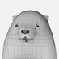

メルカリ员工的AI对话记录或外泄，涉约3800人
7 条帖子，合计浏览 359 万次
大型二手交易应用メルカリ20日宣布，集团员工在办公软件 Notion 的 AI 功能里输入的内容和 AI 的回答，可能因为 Notion 委托处理部分 AI 运算的公司 Fireworks AI 遭入侵而外泄，涉及顾客、合作方和应聘者等约3800人。员工输入 AI 工具的内容也被卷进泄露，NHK 等媒体做了报道。同一时期，佳能在日本的销售公司キヤノンMJ和招聘信息公司リクルート也因外包商遭入侵公布了泄露。
- 泄露内容
- 外泄的是集团三家公司员工10月5日至24日输入 Notion AI 的内容和回答的一部分。涉及顾客约1500人，其中约1060人只有顾客识别号，这个编号不能用来登录。 メルカリ官方
- 其他人员
- 记录里还有合作方负责人约570人、应聘者约170人、派遣员工和已离职者等约1530人的信息，应聘者的资料包括住址、生日和选拔情况。部分内部业务系统的登录凭证也在其中，已经全部作废重发。 メルカリ官方
- 起因
- Notion 为了分析 AI 功能的使用情况，把记录发给 Fireworks AI 并存在对方的系统里，对方随后遭到入侵。Notion 11月10日通知メルカリ，之后切断了和 Fireworks AI 的连接，并删除了这些记录。 メルカリ官方
- 没泄露的
- メルカリ说没有发现个人编号（My Number，日本的个人身份号码）、信用卡号和顾客登录密码外泄，也没有发现顾客账号被盗登。它提醒用户不要理会借机冒充メルカリ或银行的邮件、电话和短信。 メルカリ官方
- 其他公司
- キヤノンMJ 因外包商遭入侵，约370万件信息可能外泄。リクルート 也因外包商遭入侵，员工等约2万件信息可能外泄。 日经
补充来源：当社グループが利用するクラウドサービスの委託先への不正アクセスによる情報流出の可、メルカリ AIに入力した個人情報漏えいか“リスト型攻撃”も | NHKニュース
看到有公司连已退会者的信息也一起泄露，建议退会前先把住址和姓名改成乱填的内容。
TOHRU HIRANO认为 GMO 的高层出面开记者会道歉，比楽天証券的应对好得多，主张和出事时躲着不出面的公司解约。
渡邉正裕
政府会议建议扩大70至74岁医疗费三成负担
2 条帖子，合计浏览 14.3 万次
日经报道，政府的有识者会议（请专家给政策提建议的会议）建议下调70至74岁老人适用医疗费三成自付的年收入标准，让更多老人按三成付费。执政的自民党和日本维新会7月已同意按支付能力重新设计老人看病的自付比例，政府和执政党准备年内拿出社保改革的方向。一位税理士（税务师）转发这条新闻，主张不分年龄一律三成，获得800多个赞。
- 现行比例
- 看病时在窗口自付的比例，69岁以下原则三成，70至74岁原则两成，75岁以上原则一成，收入较高的付两成。70岁以上收入达到和在职者相当水平的人，也付三成。 中日新闻
- 改革方向
- 政府和执政党在研究调整年龄分段和收入标准，扩大付两成、三成的老人范围。日经报道的建议，是降低70至74岁老人付三成的年收入门槛。 中日新闻、日经
- 时间表
- 自民党和维新7月同意，从“不论年龄、按能力负担”的角度重新设计自付比例。政府和执政党会在年内拿出社保改革的方向。 中日新闻
- 争议
- 中日新闻的评论文章提醒，负担过重可能让老人放弃看病。日本商工会议所指出，付三成的人的医疗费没有税金补贴，扩大范围后可能要靠在职者的保险费填补，因此要求同时增加税金投入。 中日新闻、弁护士JP新闻
补充来源：高齢者の負担増 医療から遠ざけぬよう：中日新聞Web、社会保険料“総報酬の約3割”“もう限界” 賃上げされても手取り減るケースも、“手
AI版黎曼证明再过两项检查，官方比对仍在跑后续
7 条帖子，合计浏览 377 万次
之前的报道：11月21日晚间“AI版黎曼证明续议：“25万页”和Lean漏洞”
Anthropic（开发 Claude 的 AI 公司）的数学家 Levent Alpöge 和 Claude 写出的黎曼猜想证明，又通过了两项检查。负责复核的麻省理工学院数学家 Andrew Sutherland 在日本时间21日晚更新的页面上说，约17.5万个模块全部过关，只剩 Lean（让电脑检查证明的编程语言）官方比对工具等几项检查还在运行。Elon Musk 在 X 上评论了这份证明的用处，两条帖子合计获得1.4万个赞。
- 此前
- 这份证明只以 Lean 代码公开，已有两个独立编写的检查程序接受了整套证明。 MIT 复核页面
- 新通过
- 第三个独立检查程序 lean4lean 逐个检查了约17.5万个模块，全部通过。Lean 自带的检查工具也把每个模块重新跑了一遍，没有一个被拒绝。 MIT 复核页面
- 还在跑
- Lean 官方的比对工具（确认证明的命题和标准写法一致）的端到端检查，以及 Lean 内核对整份导出文件的检查，还没有出结果。这些检查只能单线程运行，要花很多个小时。 MIT 复核页面
- 证明范围
- 页面说明，这次检查的广义黎曼猜想只针对狄利克雷 L 函数（数论里和质数分布有关的一类函数）。更一般的 L 函数不在已检查的命题里。 MIT 复核页面
- 附带结论
- Sutherland 把这份证明和另一份独立的 Lean 形式化结合，推出了两个关于“一个数所有因数之和”的不等式，它们和黎曼猜想等价。这部分已被两个独立检查程序接受。 MIT 复核页面
引用 Alpöge 说明里的一段，证明靠的是高阶群上的自守形式（数论里一类高度对称的函数），作者自称并不精通这个领域。一位研究这个方向的顶尖专家的反应是“当初该更大胆些”。
 Charlie O'Neill
Charlie O'Neill认为证明的用处在于，许多以黎曼猜想成立为前提的定理从此不再需要这个前提。
 Elon Musk
Elon Musk说这次是“证明了，但还没人看懂”，并预测今后的重大突破都会是这样。
 Chubby
Chubby
自民拟提议设“人口战略厅”，12月上旬交高市
1 条帖子，合计浏览 12.5 万次
执政的自民党人口战略本部（首相高市早苗直属的党内机构，本部长是前政调会长下村博文）20日开会，打算在给政府的提言里写明设立“人口战略厅”，作为应对人口减少的国家指挥中枢。日本近年接连新设数字厅、儿童家庭厅等机构，一个以中央部委为题材的账号把这个构想加进了新设机构清单，帖子获得1700多个赞。
- 提言内容
- 提言会写明设立人口战略厅，由它统筹人口减少对策。本部讨论的是扭转少子化，以及在人口减少的社会里保持增长等问题。 时事通信、产经新闻
- 时间表
- 提言最快下周汇总，12月上旬向首相高市早苗提出。政府计划年内制定“人口综合战略”。 时事通信
- 来历
- 人口战略本部是10月新设的高市总裁直属机构，首相请下村博文牵头汇总党的提言。下村当时说，要向政府提出“有棱角的大胆提言”。 产经新闻
补充来源：人口減少で“戦略庁”創設＝自民、政府へ来月提言、自民党の“人口戦略本部”初会合 高市総裁直属 11月末に提言とりまとめへ（産経新
原帖霞ヶ関女子
列出2008年以来新设的各个“厅”，最近的是11月成立的防灾厅。它引用的帖子还说，提言会研究推广短时间正式员工，并考虑把“65岁以上”的老年人定义往上提。
霞ヶ関女子
GPT-6.2 Astra编程升至第3，写作退步后续
6 条帖子，合计浏览 48.8 万次
之前的报道：11月19日晚间“GPT-6.2 Astra 实测排第6，成本降四成”
根据用户真实任务给 AI 模型排名的评测网站 Arena.ai 公布了 OpenAI 新模型 GPT-6.2 Astra 的分项成绩：编程明显进步，日常聊天和写作却比上一代退步，两者相抵后总排名只比上一代高一位。Arena 同一天还更新了“对齐指数”，衡量 AI 智能体会不会擅自操作、谎报完成或把用户没说过的话算到用户头上，OpenAI 的模型包揽前七。
- 编程
- 在编程分项上，GPT-6.2 Astra 得1338分，比上一代 GPT-6 Astra 高50分，排名从第8升到第3。 Arena.ai
- 聊天写作
- 在查资料、辅导和写作这类日常任务上，它得1211分，比上一代低54分，排名从第8跌到第11。用户确认写作和翻译任务成功的比例从约91%降到约86%，创意文案退步最明显。 Arena.ai
- 对齐榜
- 按改进后的计算方法，OpenAI 的模型占了对齐指数前七名。Anthropic 的新模型 Claude Fable 5.2 首次上榜排第8，Claude Opus 5.5 从第6跌到第17。 Arena.ai
- 开源模型
- 公开权重的模型普遍落后于闭源模型，排名最高的是 Moonshot AI 的 Kimi K3.1 Pro，排第9。第二名 Mimo-V2.6-Flash 只排到第26。 Arena.ai
认为新榜单说明 OpenAI 在对齐上继续领先业界。
Brandon McKinzie觉得 ChatGPT 最近表现一般，换成 Astra 后好一些，但 Astra 很快就会用到额度上限。
 Mamoru B Komachi
Mamoru B Komachi称 GPT-6.2 发布当天早期测试者差评不断，Google 的 Neon 让 OpenAI 一周内被反超，这些说法没有给出来源。
Binkg
仍在讨论
- 房产账号续贴降价，品川一套塔楼降2000万
时间线上的房产账号还在贴东京公寓的降价挂牌，例如品川的新建塔楼リビオタワー品川一套三室户从约1.78亿日元降到约1.58亿日元，也在争论卖不掉的人能不能改成出租撑过跌市，这些都是个人账号的观察。
- 开发者续议Gemini 4 Neon，有人称难题全解
时间线上的开发者还在交流 Google 新模型 Gemini 4 Neon 的使用体验，有人说它解决了其他模型都没解决的难题，也有人抱怨在第三方编程工具里很难配置，这些都是个人账号的说法。
快讯
日本
日经商业：政府10月起大幅上调外国人办理在留手续的手续费，最高涨到原来的12.5倍，依赖外籍员工的企业负担加重。
日経ビジネス东京千代田区拟加强管制秋叶原穿女仆装拉客的行为，违规3次罚款5万日元。
アキバジゴク通勤用缆车“Zippar”成立推进协议会，东京稻城市、福岛县南相马市等6个市目标引进。
 日本経済新聞 電子版
日本経済新聞 電子版阪急电铁将在大阪梅田站再开发中建双塔楼，计划2040年前开业。
日本経済新聞 電子版日经：农地被擅自改作建材堆放场、停车场等的已超过1300块，有地主把稻田租给拆迁公司，年收入近200万日元。
日本経済新聞 電子版新宿站西口高约258米的超高层开发项目开始组装地上钢架，建成后将是新宿站一带最高的楼。
 中谷幸司
中谷幸司记账服务マネーフォワード ME 自11月10日起每天凌晨1点到6点停止访问以降低入侵风险，有用户批评它不给补偿。

sabakichi有用户整理手机支付 PayPay 被盗刷的两种手法：关联的 Google 等账号被盗，以及假应用远程操作手机后把关联银行账户转空。
三日前兵库县西宫市一户住宅被盗约20公斤金块和约2500万日元现金，NHK 说金块价值约4亿日元。
とむ
国际
BBC：一艘驶往俄罗斯的船在芬兰湾遭到攻击。
 BBC News
BBC News美联社：墨西哥当局夜间突袭，抓获 FBI 十大通缉犯之一、贩毒集团头目“El Chapo Isidro”。
 The Associated Press
The Associated Press俄罗斯正式允许交易所在央行批准后开展加密货币交易。
 Watcher Guru
Watcher GuruNASA：发射49年的旅行者1号离地球已达1光日，约260亿公里。
Mustafa Suleyman
科技和 AI
SpaceX 的 Dragon 货运飞船22日早上溅落，完成第35次国际空间站商业补给任务。
 SpaceX
SpaceXGoogle 的 AI 编程工具 Antigravity 再次重置全部用户的额度，称缓存改进让同样额度能多做22%。
Rody Davis特斯拉辅助驾驶 FSD V15 新进展：Musk 展示新驾驶画面，转弯提示显示在画面里，点画面任意一点车就会开过去。
Elon Musk在 iPhone 上跑安卓的 Andarium 被苹果下架后，已购用户也不能重新下载，开发者提供侧载安装包。
xieyiThe Information：Anthropic 向客户提供超过30%的折扣，换取更大的 AI 支出承诺。
 The Information
The Information苹果平台常用的依赖管理工具 CocoaPods 12月2日起不再接受新包和新版本，现有包改为只读。
Ivan Tokar彭博 Gurman：苹果在开发能操控 Mac、在应用和浏览器之间切换并写代码调试的 AI 智能体。
Mark GurmanMeta 总裁称 Zuckerberg 已把办公桌搬进公司 AI 实验室，亲自和研究员一起写代码。
The TranscriptHugging Face Transformers 为 Inkling 2 Mini 加入苹果芯片专用内核，M3 Max 上内存占用从约46GB降到约10GB。
 bebu
bebu编程工具 OpenCode 对 GLM 5.3 和 DeepSeek V4.1 Flash 两款模型降价60%。
 OpenCode
OpenCode
钱和房产
NHK：政府和执政党研究在2027年度税改中抑制新建公寓投机买卖，时事通信称1年内转卖的个人税率拟升至52%。
 NHKニュース
NHKニュース神户空室税续：税理士指出，继承空房出售时的3000万日元特别扣除只适用独栋，继承的公寓用不了。
 税理士法人トゥモローズ
税理士法人トゥモローズ个人养老金 iDeCo 12月起提高每月缴费上限，可加入的年龄延长到70岁前。
日本経済新聞 電子版NHK：加密资产用户漏报收入的情况很多，国税当局将加强调查体制。
NHKニュース每日新闻：スルガ银行违规发放公寓投资贷款的问题，仍有约300名受害者背着债务，解决难度很高。
 毎日新聞
毎日新聞房地产投资信托ユナイテッド・アーバン买下大阪御堂筋一栋由 WeWork 整栋承租的大楼的50%份额。
フドキン美国自2019年底以来物价累计涨幅：咖啡约122%，鸡蛋约81%，房价约59%，电费约45%。
 unusual_whales
unusual_whales
值得单独看的帖子
- 能量模型学习资料：课程讲座论文
汇总了纽约大学深度学习课程2021年版的能量模型（EBM）章节、2019年的一场讲座视频和2006年的能量模型教程论文。适合想用一个统一框架理解分类、自监督和扩散模型的人系统学习。
 Yann LeCun，赞 701
Yann LeCun，赞 701 - 论文：harness 让模型组合泛化
新论文认为，harness（驱动模型调用工具、拆分任务的外层程序）能把模型已有能力组合起来，处理更长更复杂的任务，还提出只训练单次调用的省数据训练法。论文、日志、代码和数据都已公开。
alex zhang，赞 1,468 - Claude Code 脚本模式试用
开启试验功能 Code Mode 后，Claude 会写 JavaScript 脚本并行调用多个工具，后台脚本最长可跑两小时，用 /tasks 管理。启动时设环境变量 CLAUDE_CODE_EXPERIMENTAL_CODE_MODE=1 就能试，适合批量修改和多文件审查。
 Addy Osmani，赞 763
Addy Osmani，赞 763 - Claude 连 Gemini 笔记本
按步骤说明怎样在 Google Cloud 建 OAuth 客户端（第三方登录授权用的凭证）、填写回调地址，再在 Claude 里添加自定义 MCP 连接器（让 AI 调用外部服务的接口）。照做就能让 Claude 读取自己的 Gemini 笔记本。
Seth Ladd，赞 125 - 智能体时代CLI与API分工
整理了让模型直接写代码调 API 和使用命令行工具各自的长处。结论是有副作用、涉及密钥的操作走命令行，只读分析和临时调查交给代码执行，可作为设计智能体工具的参考。
 Kazunori Sato，赞 6
Kazunori Sato，赞 6 - AWS开源CodeKB助AI读旧代码
awslabs 公开的开源工具，帮助 AI 理解已有系统的代码，面向在旧系统上继续开发的场景。代码在 GitHub 上，可以直接试用并反馈。
Masao Kanamori，赞 147 - 外交官“第二大脑”完整配方
新加坡外长 Vivian Balakrishnan 公开了把个人知识库智能体从树莓派搬到 Claude Duet 的做法，包括整理好的 wiki、一份技能配置和全部 prompt。内容放在 GitHub Gist 上，可以照着搭。
Ivan Leo，赞 14 - 文档解析榜ParseBench-2
在文档解析评测 ParseBench-2 上测了59个模型，其中20个公开权重，表现最好的有 KDL、Infinity-Parser2 等。数据集在 Hugging Face 公开，可用来挑选文字识别和文档解析模型。
 Jerry Liu，赞 24，含图
Jerry Liu，赞 24，含图 - worktree 占满磁盘的解法
推荐开源工具 plonge，用来处理多个 git worktree（同一仓库的多个工作目录）把磁盘占满的问题。经常让多个智能体并行开发的人可以试试。
Antoine v.d. SwiftLe，赞 105 - 怎样给公司搭“知识工厂”
长文介绍 LangChain 内部各个智能体共用的学习循环，讲公司怎样把自己的做事方式和标准沉淀成智能体能用的知识。
Harrison Chase，赞 1,076